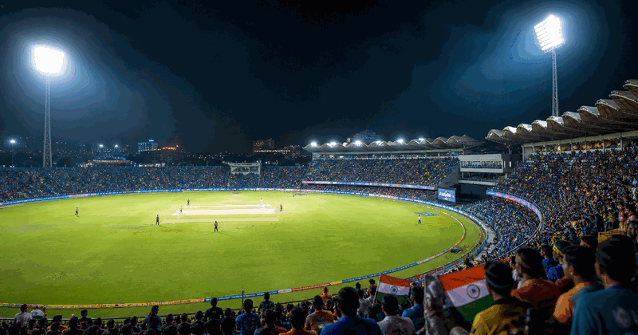
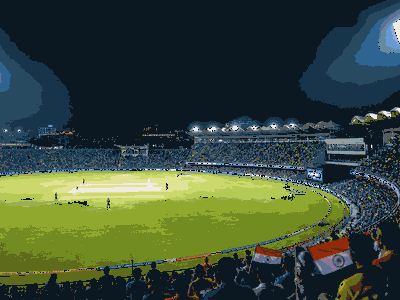

cricket event view
ICC T20 World Cup
ICC T20 World Cup keeps the evergreen overview and current edition details together in this framed event view.
FrequencyRecurring
Current edition2027
Main cityHost cities TBC
FormatT20 international tournament
History viewEdition details in one place
Use the year switcher for recent editions. Date, venue, ticket and programme updates stay inside the same event URL.

More CricketInterested in more cricket?Explore related events, places and calendar moments.